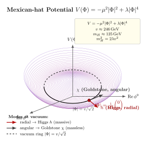

Higgs 机制 — 自发对称破缺到底破的是哪个对称?
上一节讲完夸克与轻子三代结构, 我们手里已经有了标准模型 $SU(3)_c\times SU(2)_L\times U(1)_Y$ 的规范场. 但有个很实际的事情在胳膊肘上顶着: $W^\pm$ 和 $Z$ 玻色子, 实验上测到它们的质量分别是 $m_W\approx 80.4\,\mathrm{GeV}$, $m_Z\approx 91.2\,\mathrm{GeV}$ —— 这两个粒子重得像铁原子. 但规范不变性像铁律一样禁止我们直接写 $\tfrac12 M^2 W_\mu W^\mu$ 这样的质量项; 一旦写了, 规范变换就把它变脏, 理论也就不可重整化了. 难题很干净: 短程作用 (弱相互作用只穿 $10^{-18}\,\mathrm{m}$) 要求规范玻色子有大质量; 规范不变性要求它们没质量. 怎么办? Brout, Englert, Higgs, Guralnik, Hagen, Kibble 在 1964 年挤在差不多同一时间给出了同一个答案: 不在 Lagrangian 里写质量, 而是让质量从真空的选择里冒出来. 这一节的任务是: 把这个机制严格地推一遍, 并且特别认真地回答一个经常被糊弄过去的问题 —— 自发对称破缺破的到底是哪个对称?
一、为什么不能直接写 $\tfrac12 M^2 A_\mu A^\mu$?
先把这个禁令摆清楚, 因为它是整个机制的起点. 考虑一个 $U(1)$ 规范场 $A_\mu$, 规范变换是 $A_\mu\to A_\mu+\partial_\mu\alpha(x)/e$. Maxwell 项 $-\tfrac14 F_{\mu\nu}F^{\mu\nu}$ 在这个变换下不变 (因为 $F_{\mu\nu}=\partial_\mu A_\nu-\partial_\nu A_\mu$ 里 $\partial_\mu\partial_\nu\alpha$ 的项反对称抵消). 但如果我们加上 $\tfrac12 M^2 A_\mu A^\mu$, 在规范变换下它变成 $\tfrac12 M^2(A_\mu+\partial_\mu\alpha/e)(A^\mu+\partial^\mu\alpha/e)\neq \tfrac12 M^2 A_\mu A^\mu$. 规范不变性破了. 这不只是美学问题, 它导致两个具体的灾难: (i) 大动量下规范玻色子纵向极化的传播子 $\sim k_\mu k_\nu/M^2$ 不衰减, 散射振幅在高能发散 (违反幺正性, 比如 $W_L W_L\to W_L W_L$ 振幅在 $E\sim 1\,\mathrm{TeV}$ 以上爆掉); (ii) 't Hooft 1971 才能证的定理明确: 只有规范不变的理论才 (可重整). 所以不可以硬写质量项. 但 $W,Z$ 确实有质量, 实验摆在那. 这就要求我们: 质量必须以一种不破坏规范不变的方式被"生出来".
这个问题在凝聚态里其实 Anderson 1962–63 就指出过类似的图景: 超导体里, 光子在介质中获得有效质量 (Meissner 效应里磁场被指数屏蔽, 衰减长度 $\lambda_L\sim 100\,\mathrm{nm}$), 因为库珀对的凝聚让 $U(1)_{em}$ "藏起来". 规范对称没有消失, 它被真空掩盖了, 但这种掩盖方式不给 Lagrangian 添上任何显式破坏项. Higgs 把这条想法搬进了相对论场论.
二、deepdive: Mexican hat 势与生成元逐个检查
现在严格做. 引入一个 $SU(2)_L$ 双重态复标量 $$\Phi(x)=\begin{pmatrix}\phi^+(x)\\ \phi^0(x)\end{pmatrix},\qquad Y_\Phi=\tfrac12,$$ 它在 $SU(2)_L$ 下按基本表示变, 带超荷 $Y=1/2$ (按 $Q=T^3+Y/2$ 的约定, 上分量 $\phi^+$ 电荷 $+1$, 下分量 $\phi^0$ 电荷 $0$). 势能取 $$V(\Phi)=-\mu^2\Phi^\dagger\Phi+\lambda(\Phi^\dagger\Phi)^2,\qquad \mu^2\gt 0,\;\lambda\gt 0. \tag{1}$$ 注意负号: $-\mu^2$ 前面那个负号把势从抛物线变成墨西哥帽. 极限看一眼就清楚 —— 如果 $\mu^2\lt 0$ (即 $+|\mu^2|\Phi^\dagger\Phi$), 势在 $\Phi=0$ 取最小, 没有自发破缺, 所有粒子按常规方式无质量; 但我们取 $\mu^2\gt 0$, 势在 $\Phi=0$ 变成局部极大 (不稳定鞍点), 真正的极小在 $|\Phi|^2=\mu^2/(2\lambda)$ 那一圈上. 这就是 Mexican hat: 顶上一个小土包, 周围一圈山谷, 谷底高度相同, 形成 $S^3$ 流形 (四个实自由度满足一个约束).
真空必须挑一个点. 规范不变量 $|\Phi|^2=v^2/2$ 只定下了半径, 方向是自由的. 我们用规范自由度把所有方向转成同一个标准选择 $$\langle 0|\Phi|0\rangle=\frac{1}{\sqrt 2}\begin{pmatrix}0\\ v\end{pmatrix},\qquad v=\frac{\mu}{\sqrt\lambda}.$$ 这就是"真空选了一个方向"的具体数学. 下面一步是整节最关键的一算: 这个真空破了哪些对称, 留了哪些对称?
逐个检查 $SU(2)_L\times U(1)_Y$ 的四个生成元. $SU(2)$ 生成元取 $T^a=\sigma^a/2$, Pauli 矩阵是 $$\sigma^1=\begin{pmatrix}0&1\\1&0\end{pmatrix},\;\sigma^2=\begin{pmatrix}0&-i\\i&0\end{pmatrix},\;\sigma^3=\begin{pmatrix}1&0\\0&-1\end{pmatrix}.$$ 超荷 $Y$ 作用到 $\Phi$ 上是乘以它的超荷 $1/2$ 倍恒等矩阵. 一个对称生成元 $T$ 破不破真空, 看 $T\langle\Phi\rangle$ 等不等于零: 等于零, 不破; 不等于零, 破. 物理上原因是: 若 $T\langle\Phi\rangle\neq 0$, 则沿该方向做变换会把真空推到"隔壁", 真空不再被这个对称固定, 对称破缺; 沿该方向有无质量 Goldstone 模.
一个个算: $$T^1\langle\Phi\rangle=\frac{1}{2}\begin{pmatrix}0&1\\1&0\end{pmatrix}\frac{1}{\sqrt 2}\begin{pmatrix}0\\ v\end{pmatrix}=\frac{v}{2\sqrt 2}\begin{pmatrix}1\\ 0\end{pmatrix}\neq 0.$$ $$T^2\langle\Phi\rangle=\frac{1}{2}\begin{pmatrix}0&-i\\i&0\end{pmatrix}\frac{1}{\sqrt 2}\begin{pmatrix}0\\ v\end{pmatrix}=\frac{-iv}{2\sqrt 2}\begin{pmatrix}1\\ 0\end{pmatrix}\neq 0.$$ $$T^3\langle\Phi\rangle=\frac{1}{2}\begin{pmatrix}1&0\\0&-1\end{pmatrix}\frac{1}{\sqrt 2}\begin{pmatrix}0\\ v\end{pmatrix}=\frac{1}{\sqrt 2}\begin{pmatrix}0\\ -v/2\end{pmatrix}\neq 0.$$ $$Y\langle\Phi\rangle=\frac{1}{2}\cdot\frac{1}{\sqrt 2}\begin{pmatrix}0\\ v\end{pmatrix}=\frac{1}{\sqrt 2}\begin{pmatrix}0\\ v/2\end{pmatrix}\neq 0.$$ $T^1,T^2,T^3,Y$ 单独作用, 都不湮灭真空 —— 朴素看, 四个都破了, 对应四个 Goldstone? 不对, 再看一步: 某些 组合 可能湮灭. 把 $T^3$ 和 $Y/2$ 加起来: $$\Big(T^3+\tfrac{Y}{2}\Big)\langle\Phi\rangle=\frac{1}{\sqrt 2}\begin{pmatrix}0\\ -v/2\end{pmatrix}+\frac{1}{\sqrt 2}\begin{pmatrix}0\\ v/4\cdot 2\end{pmatrix}=\frac{1}{\sqrt 2}\begin{pmatrix}0\\ 0\end{pmatrix}=0.$$ (具体算: $T^3$ 给下分量 $-v/2$, $Y/2=1/4$ 给下分量 $+v/4\cdot$ (分量值 $v$ 本身有系数 $1/\sqrt 2$, 即 $+v/4$ 贡献; 写清楚一点, 在 $(0,v/\sqrt 2)$ 上 $T^3$ 给 $-v/(2\sqrt 2)$, $Y/2$ 给 $+v/(4\sqrt 2)\cdot 2=+v/(2\sqrt 2)$, 相加为零.) 把这个未破缺的生成元叫 $Q\equiv T^3+Y/2$, 它就是电荷算符. 其他三个线性无关的方向 ($T^1,T^2$ 和 $T^3-Y/2$, 或更常用的写法: $T^\pm=T^1\pm iT^2$ 和 $T^3+Y/2$ 的正交补) 都不湮灭真空, 每个对应一个 Goldstone 模.
所以答案是: $SU(2)_L\times U(1)_Y$ 有四个生成元, 真空选择让其中 三个线性组合 破缺 (对应三个 Nambu–Goldstone 零模), 剩下 一个 线性组合 $Q=T^3+Y/2$ 未破缺 (对应未破的 $U(1)_{em}$, 它的规范玻色子就是无质量的光子). 破缺方式不是"一个群消失", 而是"一个群陷进它的子群": $$SU(2)_L\times U(1)_Y\;\xrightarrow{\;\langle\Phi\rangle\;}\;U(1)_{em}. \tag{2}$$ 这才是"Higgs 机制破哪个对称"的精确答案: 破掉的是整个四维规范群中能把真空推到其他等价真空的那三个方向, 留下的是让真空不动的那一个方向. 电荷守恒 (即 $U(1)_{em}$ 未破) 是这个选择的直接结果, 不是独立假设.
三、Goldstone 被吃掉, 质量长出来
接着做规范玻色子质量的部分. 在 Higgs 场的动能项 $|D_\mu\Phi|^2$ 上展开 $\Phi=\langle\Phi\rangle+\text{(涨落)}$, 把 VEV 代进协变导数 $$D_\mu\Phi=\Big(\partial_\mu-igW^a_\mu T^a-ig'B_\mu \tfrac{Y}{2}\Big)\Phi,$$ 其中 $g$ 是 $SU(2)_L$ 耦合, $g'$ 是 $U(1)_Y$ 耦合. 把 $\langle\Phi\rangle=(0,v/\sqrt 2)^T$ 直接代入 (暂时关掉涨落), 只保留常数 VEV, 有 $$|D_\mu\langle\Phi\rangle|^2=\frac{v^2}{8}\Big[g^2(W^1_\mu)^2+g^2(W^2_\mu)^2+(gW^3_\mu-g'B_\mu)^2\Big].$$ 头两项给 $W^1, W^2$ 质量: 定义 $W^\pm_\mu=(W^1_\mu\mp iW^2_\mu)/\sqrt 2$, 得 $m_W^2=g^2v^2/4$, 即 $m_W=gv/2$. 第三项给出一个 $W^3$ 与 $B$ 混合的二次型, 对角化定义 $$Z_\mu=\cos\theta_W W^3_\mu-\sin\theta_W B_\mu,\qquad A_\mu=\sin\theta_W W^3_\mu+\cos\theta_W B_\mu,$$ 其中 $\tan\theta_W=g'/g$ 是 Weinberg 角. 用这对新场, 混合项对角化, 质量变为 $m_Z^2=(g^2+g'^2)v^2/4=m_W^2/\cos^2\theta_W$, 光子 $A_\mu$ 质量为零 (它恰好对应 $Q=T^3+Y/2$ 方向). 正是我们刚才逐生成元检查得到的未破缺方向.
三个原本需要的 Goldstone 模 (三个被真空破缺的方向) 在哪儿? 它们通过 unitary 规范被吸收进了 $W^\pm_\mu, Z_\mu$ 的纵向分量. 无质量矢量玻色子只有两个横向极化, 有质量矢量玻色子有三个极化 (两横一纵). 数自由度: 破缺前 $SU(2)_L\times U(1)_Y$ 有 $4$ 个无质量规范玻色子 $\times 2$ 极化 $=8$ 个自由度, 加上 $\Phi$ 有 $4$ 个实标量, 共 $12$; 破缺后 $W^\pm, Z$ 各 $3$ 极化 $+ \gamma$ 的 $2$ 极化 $+ 1$ 个物理 Higgs $= 9+2+1=12$. 自由度守恒. 这就是"Goldstone 被吃掉"的物理意义: 它们没消失, 只是换了身份, 变成矢量场的纵向分量. 用工地话讲, 质量是矢量场吃掉标量场换来的.
费米子也靠同一个 VEV 得质量. Yukawa 项 $-y\bar\psi_L\Phi\psi_R+\text{h.c.}$ 在破缺后变成 $-yv\bar\psi\psi/\sqrt 2=-m\bar\psi\psi$, 其中 $m=yv/\sqrt 2$. 整个标准模型的所有粒子 (除了中微子和光子、胶子) 的质量都从这个同一个 $v$ 量出来. 为什么 top 夸克比电子重 $3\times 10^5$ 倍? 不是 $v$ 不一样, 是 $y$ 差了这么多倍 —— $y_t\approx 1$, $y_e\approx 3\times 10^{-6}$. 这个 Yukawa 耦合常数从哪儿来, 标准模型不回答, 是个开放问题 (Flavour 之谜).

四、数字、历史与没解决的问题
代入数字. 参数 $v$ 由弱相互作用的低能常数 (Fermi 常数 $G_F=1.166\times 10^{-5}\,\mathrm{GeV}^{-2}$) 精准测定, $v=(\sqrt 2 G_F)^{-1/2}\approx 246.22\,\mathrm{GeV}$. 代入 $m_W=gv/2$: 取 $g\approx 0.653$ (电弱精测), $m_W=0.653\cdot 246/2\approx 80.3\,\mathrm{GeV}$, 实验值 $80.37\,\mathrm{GeV}$, 吻合. $m_Z=m_W/\cos\theta_W$, $\sin^2\theta_W\approx 0.2312$, $\cos\theta_W\approx 0.877$, 得 $m_Z\approx 91.6\,\mathrm{GeV}$, 实验值 $91.19\,\mathrm{GeV}$, 也对. Higgs 本身的物理质量来自径向方向的曲率, 在 $\Phi=\langle\Phi\rangle+h/\sqrt 2$ 处展开 $V$, 得 $V\supset \tfrac12 (2\mu^2) h^2=\tfrac12 (2\lambda v^2)h^2$, 所以 $m_H^2=2\lambda v^2$. 代入实验 $m_H=125.25\,\mathrm{GeV}$, 反解 $\lambda=m_H^2/(2v^2)=(125.25)^2/(2\cdot 246.22^2)\approx 0.1293$ —— 这是一个相当弱的四次耦合, 远小于 QCD 的 $g_s^2/4\pi$, 让 Higgs 势在目前能标下远离 Landau 极点, 但真空稳定性 (top quark 修正把 $\lambda$ 在高能标往下推) 让标准模型的真空可能是亚稳态, 我们下一节一起回到这个故事. 另一数字: top Yukawa $y_t=\sqrt 2\, m_t/v=\sqrt 2\cdot 173/246\approx 0.994$, 恰好接近 $1$, 这个巧合一直被人念叨 (top 条件, 或"trans-Planckian 真空稳定性"的阈值问题).
历史角落. 1964 年在短短几个月内, 同一个机制被三组人独立写出: (i) François Englert 与 Robert Brout 在 Physical Review Letters 8 月 31 日发表 Broken Symmetry and the Mass of Gauge Vector Mesons; (ii) Peter Higgs 9 月 15 日的稿子被编辑退回, 改写后 10 月 19 日重投, 刊出于 Physical Review Letters 同卷, 并明确写出了物理 Higgs 玻色子 (其他两组的论文没把径向模当作可观测粒子处理得那么清楚); (iii) Gerald Guralnik, Carl Hagen, Tom Kibble 11 月 16 日投 PRL, 对 Goldstone 定理在规范理论里的变通做了严格讨论. 三组互相不知道对方的工作. 这个机制当时只是"规范玻色子如何得质量"的一种理论可能性, 没人确信自然真的这样选; 它真正进入标准模型是 1967 Weinberg 和 Salam 把它和 Glashow 的 $SU(2)\times U(1)$ 模型焊在一起, 才给出了今天我们学的电弱理论. 't Hooft 1971 证了 Higgs 化规范理论可重整, 这个机制从一个"漂亮想法"变成了"可算的物理". 1983 年 CERN 的 UA1 和 UA2 实验 (Carlo Rubbia 领导) 在 $Sp\bar pS$ 对撞机上直接看到 $W$ 和 $Z$ 玻色子, 质量恰好在 $80$ 和 $91\,\mathrm{GeV}$; 那一年 Rubbia 和 Simon van der Meer 拿 Nobel. 最后一块拼图是 Higgs 本身, 它躲了四十八年 —— 2012 年 7 月 4 日, ATLAS 和 CMS 在 LHC 同时宣布在 $m\approx 125\,\mathrm{GeV}$ 处看到 $\gamma\gamma$ 和 $ZZ^*\to 4\ell$ 共振峰, 显著性 $5\sigma$ 以上 (显著性为什么是 $5\sigma$ 见下一节补课). 次年 (2013) Higgs 和 Englert 拿 Nobel, Brout 已于 2011 年逝世未能分享. BEH 之前的一代理论家大约经历了半个世纪才看见他们写在纸上的粒子被从真实的探测器数据里拣出来.
没解决的问题. 严格推下来 Higgs 机制给了我们一个可算的理论, 但它留下几个不自然的问题. 最直接的那个叫 hierarchy problem: $\mu^2$ 在辐射修正下会收到 $\sim \Lambda^2$ 的二次发散 (顶圈里 top loop 贡献 $\delta\mu^2\sim -y_t^2\Lambda^2/(8\pi^2)$), 若截断 $\Lambda$ 取 Planck 能标 $\sim 10^{19}\,\mathrm{GeV}$, 则要精调 $\mu^2$ 的裸值到 $36$ 位有效数字才能得出 $\mu\sim 100\,\mathrm{GeV}$. 这就是为什么 $v\ll M_{\text{Planck}}$ 看起来是个"奇迹". 超对称、复合 Higgs、额外维等 BSM 模型差不多都是为这一个问题造出来的; LHC 到目前还没看到它们, 这成了现在粒子物理最大的理论尴尬. 另一个开放问题是我们前面提到的 Yukawa 矩阵从哪儿来 (Flavour puzzle), 再一个是 $\lambda$ 在高能标下跑到负值附近 (真空稳定性在 $\sim 10^{10}\,\mathrm{GeV}$ 变得脆弱). Higgs 机制在标准模型里是一个非常干净的数学构造, 但它的每一个参数, 标准模型都只是告诉你它是多少, 不告诉你为什么是这么多. 这是我们在接下来几节 (尤其是 BSM 部分) 要重复碰到的一个主题.
小结
Higgs 机制不是"加一个质量项", 而是"换一个真空". $V=-\mu^2|\Phi|^2+\lambda|\Phi|^4$ 的 Mexican hat 让 $\Phi$ 在 $|\Phi|=v/\sqrt 2$ 的圆环上选一个方向, $\langle\Phi\rangle=(0,v/\sqrt 2)^T$ 把 $SU(2)_L\times U(1)_Y$ 四个生成元中的三个线性组合从真空的对称群里踢出来, 只留下 $Q=T^3+Y/2$ 方向 —— 这就是"破哪个对称"的严格答案: 破掉把真空搬到隔壁真空的那三个方向, 留下让真空不动的那一个方向 $U(1)_{em}$. 三个 Goldstone 模被 $W^\pm, Z$ 的纵向极化吸收, 给出 $m_W=gv/2\approx 80\,\mathrm{GeV}$, $m_Z=m_W/\cos\theta_W\approx 91\,\mathrm{GeV}$; 径向模是物理 Higgs, $m_H=\sqrt{2\lambda}v\approx 125\,\mathrm{GeV}$, 反解 $\lambda\approx 0.13$. 费米子从同一个 $v$ 通过 Yukawa 耦合 $y$ 得质量 $m=yv/\sqrt 2$, top 的 $y_t\approx 1$ 是个值得多看两眼的巧合. 1964 年 BEH 三组同时写下这个机制, 1983 年 $W,Z$ 被发现, 2012 年 Higgs 本身在 LHC 被拍到, 2013 年 Nobel. 但 hierarchy 问题 ($\mu^2$ 的辐射修正要精调 36 位) 像一根刺, 留在整个标准模型的根部 —— 下一节我们调转方向, 去看 QCD 那一侧的故事 (渐近自由), 再之后回到 BSM, 看这根刺能不能拔掉.
▲